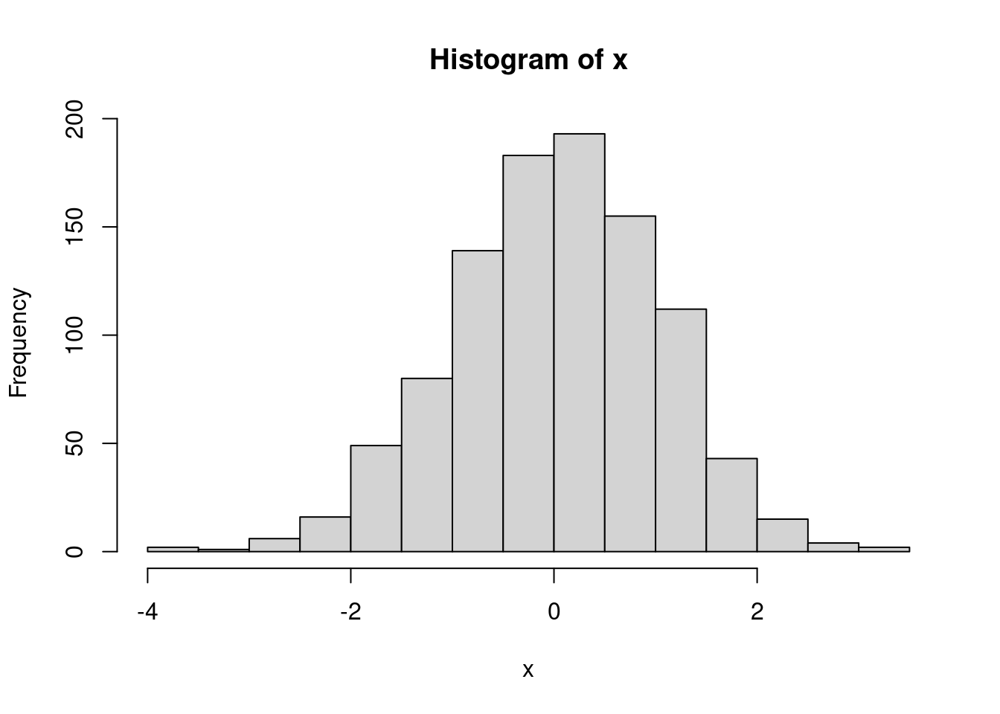
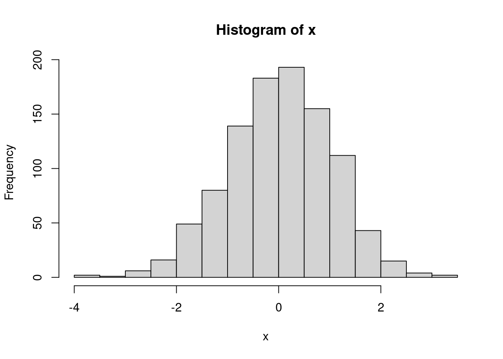
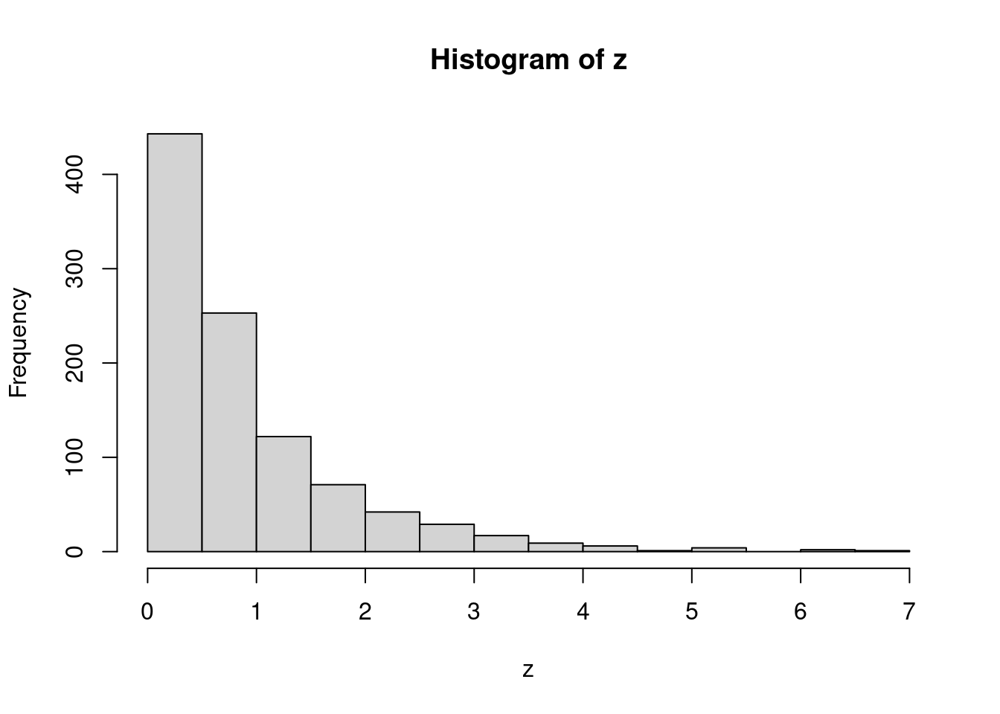

# Esto es un ejemplo de Comentario
## Generar 1000 números aleatorios extraídos de una distribución normal
x <- rnorm(1000)
## Dibujar el histograma de los números obtenidos
hist(x)
Este material ha sido diseñado para el Taller ‘Análisis sistemático de datos con R. Indicadores de calidad del dato’, de 4 horas de duración, impartido en Murcia, el 25 Octubre de 2023, durante el XXXIX Congreso SECA y XIV Congreso SOMUCA.
Recoge los contenidos tratados en el taller, y el código de todos los ejemplos que se han expuesto en el mismo.
El taller se han diseñado pensando en su uso por profesionales relacionados con la asistencia sanitaria. Por este motivo, la mayor parte de los ejemplos y casos de uso están relacionados con el ámbito de la salud. Sin embargo, los contenidos relacionados con el proceso analítico son aplicables a cualquier otro campo.
El material está organizado en los siguientes bloques:
| Bloque | Descripción |
|---|---|
| Bloque 0 - Descripción del taller | Visión general del material y el curso |
| Bloque 1 - Fundamentos de R y R Studio | Nociones elementales para comenzar a trabajar con R y R Studio |
| Bloque 2 - Casos de uso | Incluye problemas de la vida real, y un ejemplo de cómo podríamos usar la metodología sistemática de análisis de datos para responder a las cuestiones que se nos plantean |
| Bloque 3 - Proceso de análisis sistemático de datos | Detalle de cada una de las fases del análisis de datos, y una explicación de las funciones utilizadas en los casos de uso |
| Anexos - Material complementario | Listado de las funciones y paquetes utilizados, así como algún detalles específico sobre cómo se han construido algunos elementos expuestos en el taller |
A lo largo del material encontrará pequeños bloques rectangulares, sombreados en gris. En el argot de programación, estos bloques se denominan chunks.
En estos recuadros, encontrará dos tipos de contenido:
#)..pdf, .html, .doc), habitualmente vienen formateadas con colores.# Esto es un ejemplo de Comentario
## Generar 1000 números aleatorios extraídos de una distribución normal
x <- rnorm(1000)
## Dibujar el histograma de los números obtenidos
hist(x)
Dentro de una chunk, el código escrito tras un comentario (#) no se ejecutará. Sí se puede poner un comentario después de código.
z <- rexp(1000)
hist(z) # Esta línea funciona. Código seguido de comentario.
# Esta línea no funciona. Comentario seguido de código. hist(z)R distingue mayúsculas y minúsculas. Debemos ser muy cuidadosos a la hora de nombrar variables y escribir funciones
La ejecución del siguiente ejemplo está desactivada por defecto, para evitar que produzca errores de ejecución. Corte y pegue el código en su terminal y observe el resultado.
# Generamos 1000 números aleatorios siguiendo una distribución uniforme
a <- runif(1000)
# Generamos el histograma de la variable generada
hist(a) # Código correcto
Hist(a) # Código incorrecto
hist(A) # Código incorrectoEl código de los ejemplos se puede cortar y pegar directamente en un script de R.
Si situamos el ratón sobre una chunk, aparecerá un pequeño icono a la derecha de la misma. Al hacer click sobre él con el ratón, se copiará todo el código del recuadro en el portapapeles del sistema operativo.
Podemos pegarlo directamente en R con Ctrl+V
Este material incluye código muy sencillo, y alguno más elaborado. Se ha clasificado en cuatro niveles de dificultad:
Incluye demostraciones sencillas que muestran el funcionamiento de la funcionalidad que se acaba de explicar
Incluye código fácil, con paquetes de uso común y funciones sencillas, para tareas simples
Incluye código avanzado, que requiere secuencias de código o combinación de funciones
Incluye código de mayor complejidad, con paquetes especializados, para las tareas más avanzadas
Para facilitar la navegación por el material, la mayoría del código está colapsado. Por ejemplo:
Puede mostrarse su contenido pulsando el símbolo > que hay a la derecha del recuadro.
Los conjuntos de datos del taller se han creado utilizando datos reales combinados con otros ficticios: